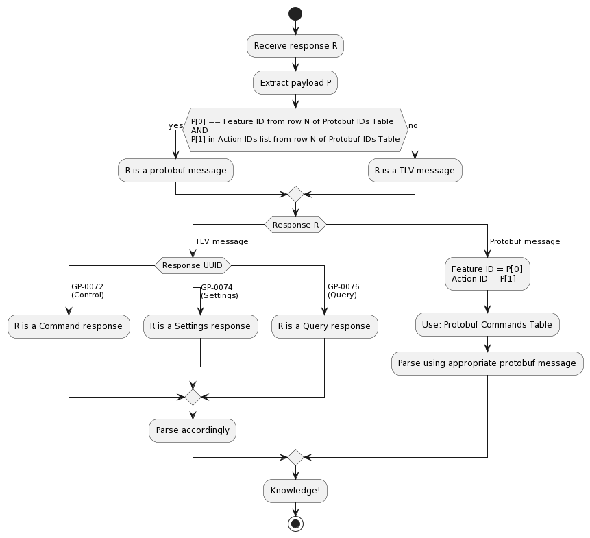

Data Protocol
Note the following terminology used in this section:
packet: GATT-level byte data including packet headers
message: Payload data accumulated from one or more packets (not including packet headers)
This section will describe the data protocol used to send and receive BLE messages. The general procedure to parse a message is to:
Accumulate and depacketize BLE packets to extract the message payload
Decipher the message’s ID and payload type
Depending on the payload type, use the per-message documentation (identified by the message’s ID) to parse the message
Note
All byte ordering is in Big Endian unless otherwise noted.
Packetization
The BLE protocol (<= v4.2) limits packet size to 20 bytes per packet. To accommodate this limitation, GoPro cameras use start and continuation packets to packetize larger payloads. If a message is less than 20 bytes, it can be sent with a single packet containing the start packet header. Otherwise, it must be split into multiple packets with the first packet containing a start packet header and subsequent packets containing continuation packet headers.
Packet Headers
Message sending and receiving is accomplished by prepending General (5-bit), Extended (13-bit), Extended (16-bit), or Continuation headers onto each packet depending on the message size and state.
Note
For byte-level examples of the below packet types, see the tutorials
General (5-bit) Packets
Messages that are 31 bytes or fewer can be sent or received using the following format:
Byte 0 |
|||||||
|---|---|---|---|---|---|---|---|
7 |
6 |
5 |
4 |
3 |
2 |
1 |
0 |
Start (0) |
General (00) |
5-bit Message Length |
|||||
Extended (13-bit) Packets
Messages that are 8191 bytes or fewer can be sent or received using the following format:
Byte 0 |
Byte 1 |
||||||||||||||
|---|---|---|---|---|---|---|---|---|---|---|---|---|---|---|---|
7 |
6 |
5 |
4 |
3 |
2 |
1 |
0 |
7 |
6 |
5 |
4 |
3 |
2 |
1 |
0 |
Start (0) |
13-bit Extended (01) |
13-bit Message Length |
|||||||||||||
Tip
Always use Extended (13-bit) packet headers when sending messages to avoid having to work with multiple packet header formats.
Extended (16-bit) Packets
If a message is 8192 bytes or longer, the camera will respond using the format below.
Byte 0 |
Byte 1 |
Byte 2 |
|||||||||||||||||||||
|---|---|---|---|---|---|---|---|---|---|---|---|---|---|---|---|---|---|---|---|---|---|---|---|
7 |
6 |
5 |
4 |
3 |
2 |
1 |
0 |
7 |
6 |
5 |
4 |
3 |
2 |
1 |
0 |
7 |
6 |
5 |
4 |
3 |
2 |
1 |
0 |
Start (0) |
13-bit Extended (10) |
Reserved |
16-bit Message Length |
||||||||||||||||||||
Warning
This format can not be used for sending messages to the camera. It is only used to receive messages.
Continuation Packets
When sending or receiving a message that is longer than 20 bytes, the message must be split into N packets with packet 1 containing a start packet header and packets 2..N containing a continuation packet header.
Note
Counters start at 0x0 and reset after 0xF.
Byte 0 |
|||||||
|---|---|---|---|---|---|---|---|
7 |
6 |
5 |
4 |
3 |
2 |
1 |
0 |
Continuation (1) |
Reserved |
4-bit Counter |
|||||
Decipher Message Payload Type
Once the packets have been accumulated and the payload has been extracted, it is necessary to decipher the message type in order to determine whether it is TLV or Protobuf and then parse it appropriately.
Below is pseudocode describing how to do this:
Camera sends response message from UUID U (string) with payload P (array of bytes) // Is it a Protobuf response? for each row in the Protobuf IDs table { F (int) = Feature ID A (array of int) = Action IDs if P[0] == F and P[1] in A { P is a Protobuf Message Match Feature ID P[0] and Action ID P[1] to a Protobuf message in the Protobuf IDs table Use matched Protobuf message to parse byte payload into useful data structure Exit } } // Nope. It is a TLV response if U == GP-0072 (Command) { Parse message payload using Command Table with Command scheme } else if U == GP-0074 (Settings) { Parse using Setting ID mapping with Command scheme } else if U == GP-0076 (Query) { Parse message payload using Query Table with Query scheme }
Alternatively this is described in flowchart form here:
Message Payload
Once the payload has been extracted and had its type deciphered, it can then be parsed depending on its type. The Open GoPro protocol uses two different top-level message payload formats:
Note
The byte table examples in this section do not contain the Packet Headers; they only consider the payload.
Type Length Value
There are two different request / response Type-Length-Value (TLV) schemes as described in the following sections.
Commands
Commands are messages sent / received on either:
The Command and Command Response characteristics
The Setting and Setting Response characteristics
They are summarized in the commands table and individually documented throughout the relevant feature section.
Command Request
Below is the top level message format for command requests:
Type (Command / Setting ID) |
Optional Parameters |
|---|---|
1 Byte |
Array of length-value pairs |
where each element of the parameter array is:
Length |
Value |
|---|---|
1 Byte |
Length Bytes |
The individual command documentation specified by the message’s Command ID will define the length and value options for each of its parameters.
Command Response
Below is the top level message format for command responses:
Type (Command / Setting ID) |
Command Status |
Optional Response |
|---|---|---|
1 Byte |
1 Byte |
Variable Length |
The individual command documentation specified by the message’s Command ID will define the response.
Tip
For byte-level examples, see the tutorials.
Queries
Queries are messages sent / received on the Query and Query Response characteristics, respectively. They are summarized in the queries table and individually documented in Query.
Query Request
Below is the top level message format for query requests:
Query ID |
Array of Element IDs |
|---|---|
1 Byte |
Variable |
The individual query documentation specified by the message’s Query ID will define the elements that comprise the element ID array.
Query Response
Below is the top level message format for query responses:
Query ID |
Command Status |
Query Results |
|---|---|---|
1 Byte |
1 Byte |
Array of id-length-value triplets |
where each element of the results array is:
ID |
Length |
Value |
|---|---|---|
1 Byte |
1 byte |
Length Bytes |
The individual query documentation specified by the message’s Query ID will define the format of the result array.
Tip
For byte-level examples, see the tutorials.
Protobuf
In order to maximize BLE bandwidth, some commands use Google Protobuf (Protocol Buffers). Open GoPro currently uses Protocol Buffers Version 2
Protobuf requests and responses are identified by a Feature ID and an Action ID prepended before their serialized payload. The top level message format for a Protobuf message is as follows:
Feature ID |
Action ID |
Serialized Protobuf Message |
|---|---|---|
1 Byte |
1 Byte |
Variable Length |
The individual Protobuf object specified by the message’s action / feature id is used to serialize / deserialize the payload.